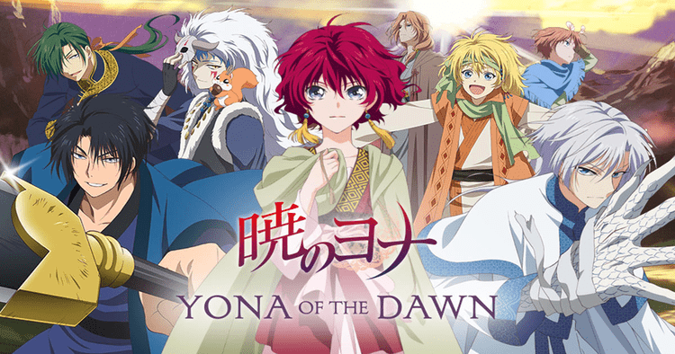

The series is centered around the journey of twelve-year-old Aang, the current Avatar and last survivor of his nation, the Air Nomads, along with his friends Katara, Sokka, and later Toph, as they strive to end the Fire Nation's war against the other nations of the world. It is show fit for all ages. It teaches important lessons and it is a show everyone can learn from. It is three seasons and it is a show I can watch without getting bored. I would recommend it to everyone!
2.Yona of the Dawn

Yona of the Dawn is an anime that circulates around Princess Yona, a girl who lives a life of luxury and ease, completely sheltered from the problems of the seemingly peaceful Kingdom of Kouka. Until, one day the sudden murder of the king and betrayal of her beloved cousin Su-won places Yona's life in mortal peril. Forced to escape only with Son Hak, who is both her childhood friend and bodyguard, the naïve princess soon discovers that Kouka is not the idyllic place she envisioned it to be. Poverty, strife, and corruption run rampant, making reclaiming the throne nothing more than a wishful fantasy given the kingdom's current state. Yona of the Dawn has to be my all time favorite anime.
3. Weightlifting Fairy Kim Bok Joo
Weightlifting Fairy Kim Bok Joo is a coming-of-age Korean drama. The drama is about a group of college athletes who are fighting for their dreams, experiencing and finding love in the process, and growing every step of the way. An unforgettable story about youth, friendship and love. Out of all the Korean dramas I have watched, I would say it is my favorite.